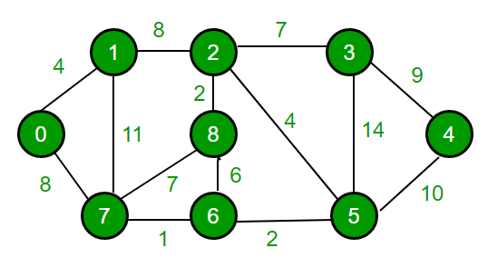
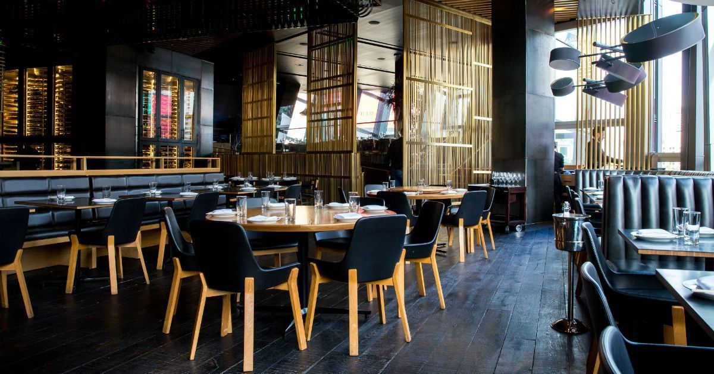

Sistema Integrado de Gestão da Associação Angolana de Internet (SIG-AAI)
UCAN - Faculdade de Engenharia - Curso Informática
Java EE | JSF | Primefaces | EJB | XHTML | AJAX | CSS | JavaScript | PostgresSQL | PGAdmin | WildFly | NetBeans

O sistema permite a gestão de dados, utilizadores, membros, serviços, finanças, bolsa de emprego e segurança da Empresa.
Sistema Integrado de Gestão da Ordem de Engenheiros de Angola (SIG-OEA)
UCAN - Faculdade de Engenharia - Curso Informática
Java EE | JSF | Primefaces | EJB | XHTML | AJAX | CSS | JavaScript | PostgresSQL | PGAdmin | WildFly | NetBeans
O sistema permite a gestão de dados, utilizadores, membros, serviços, finanças, bolsa de emprego e segurança da Empresa.
Sistema de Gestão de Loja de Instrumentos de Musicais
UCAN - Faculdade de Engenharia - Curso Informática
Java EE | JSF | Primefaces | EJB | XHTML | AJAX | CSS | JavaScript | PostgresSQL | PGAdmin | Apache Tomcat | NetBeans
O sistema permite a gestão de dados, utilizadores, funcionários, fornecedores e venda de instrumentos musicais uma loja de instrumentos musicais.
Sistema de Gestão de Locadora de Filmes DVDs
UCAN - Faculdade de Engenharia - Curso Informática
Java EE | JSP | Primefaces | XHTML | AJAX | CSS | JavaScript | MySQL | MySQL Workbench | GlassFish | NetBeans
O sistema permite a gestão de dados, utilizadores, funcionários, fornecedores, reserva e aluguel de DVDs de uma locadora de filmes DVDs.
Sistema de Gestão Escolar
UCAN - Faculdade de Engenharia - Curso Informática
Java | SwingComponents | Estruturas de Dados (Tabela Hash, Ficheiro) | Notepad++

O sistema permite a gestão de centro de prestação de serviços educacionais, incluindo alunos, reponsáveis e cursos.
Exame de Aptidão para Acesso a Universidade
UCAN - Faculdade de Engenharia - Curso Informática
C | Estruturas de Dados (Lista, Matriz, Registro) | Notepad++

O projecto tem informatiza o processo de selecção de candidatos ao exame de aptidão de uma faculdade de uma universidade.
O exame de múltipla escolha possui n questões com cada cinco alternativas, entre quais contendo apenas uma alternativa correcta.
Operações: Cadastro de Cursos, Cadastro de Candidatos, Correção de Prova, Distribuição dos Candidatos, Lançamento de Pautas.
Melhor Rota
UCAN - Faculdade de Engenharia - Curso Informática
C | Estruturas de Dados (Grafo, Matriz, Pilha, Lista) | Notepad++

O projecto Melhor Rota calcula a menor distância de um ponto inicial a outro ponto final em uma cidade (grafo), tendo em conta que pode-se passar apenas uma vez por cada ponto do grafo no trajecto.
A implementação do projecto foi feita usando algoritmos e estruturas de dados.
Consola SQL
UCAN - Faculdade de Engenharia - Curso Informática
Java | SQL | Netbeans
A consola SQL permite a execução de comandos SQL, tais como criação de base de dados, tabelas, registos, consultas, etc.
Consultório Médico
UCAN - Faculdade de Engenharia - Curso Informática
Java | Prolog | Inteligência Artificial | Netbeans

O sistema infere a probabilidade de diferentes doenças do paciente, a partir dos sintomas selecionados pelo mesmo.
Gramática
UCAN - Faculdade de Engenharia - Curso Informática
Java | Prolog | Inteligência Artificial | Processamento de Linguagem Natural (PLN) | Netbeans

O sistema é faz uma análise morfológica de determinada frase inserida pelo utilizador,e adiciona palavras e suas classes gramaticais na sua base de conhecimento.
Base de Dados Oracle SQL
UCAN - Faculdade de Engenharia - Curso Informática
SQL | Oracle Database

A base de dados permite a gestão de dados de determinada organização ou instituição.
Website Publicitário de Restaurante
UCAN - Faculdade de Engenharia - Curso Informática
HTML | CSS | JavaScript | Bootstrap | Notepad++

O website estático e publicitário de um restaurante permite aos clientes a visualização da ementa, informações de contacto, localização, e a realização de reserva.
Website Publicitário de Restaurante (Flash)
UCAN - Faculdade de Engenharia - Curso Informática
Adobe Flash

O website publicitário de um restaurante permite aos clientes a visualização da ementa, informações de contacto, localização, curso de culinária.
Mockup da Landing Page de Calçado
UCAN - Faculdade de Engenharia - Curso Informática
Balsamiq Mockups | Mockup | E-commerce
A Landing Page de um calçado permite aos utilizadores a visualização de informações, data de lançamento do calçado e reserva do calçado.
Soma de Números
UCAN - Faculdade de Engenharia - Curso Informática
Assembly | EMU8086 - MICROPROCESSOR EMULATOR | Estruturas de Dados (Pilha)

O programa permite o somatório de números (0 a 9) inseridos pelo usuário.
Desenho e Implantação de Projecto de Rede
UCAN - Faculdade de Engenharia - Curso Informática
PuTTY | Microsft Visio

Desenho e implantação de projecto de rede de uma empresa.
Equipamentos: Rooters, Switches, PCs, Servidores.
Configurações implementadas: VPN GRE, OSPF, hostnames, senha criptografada, interfaces, clock rate, login, spanning tree, VLANs, ACL, Tunel GRE, NAT, DNS, PPPoE, ISP2.
Modelagem de Projecto de Loja de Roupas
UCAN - Faculdade de Engenharia - Curso Informática
Enterprise Architect | UML | RUP
A modelagem de projecto de uma loja de roupas foi feita utilizando o modelo UML e a metodologia RUP.
Diagramas e Componentes criados: Diagramas de classe, sequência, estado, actividade, colaboração, componente e instalação para o projeto, Documento de Requisito, Glossário do Negócio, Documento de Visão, Especificação dos casos de uso, Protótipos de interfaces com o utilizador, Documentação HTML, Relatório do Projecto.
Planejamento da Implantação de Estrutura de Data Center
UCAN - Faculdade de Engenharia - Curso Informática

Este projecto apresenta o estudo do planejamento da implantação da estrutura de Data Center para uma empresa de telecomunicações, levando em consideração seu Custo de Construção (CAPEX) e Custo de Manutenção (OPEX).
Norma Adoptada: TIA-942, Tier Adotado: Tier 2